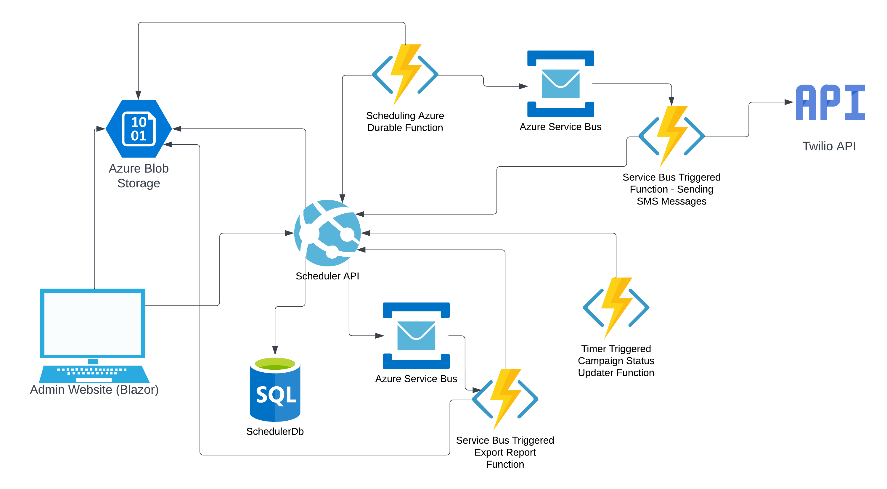

Azure Native Development: Benefits Program SMS Scheduler
Industry
Government / Public Benefits
Technologies
Azure, .NET, Durable Functions, Service Bus, Blazor
Challenge
HITRUST certification, 10x scalability requirements
Results
100,000+ SMS capacity, HITRUST certification achieved
Executive Summary
This case study details the successful modernization of a critical benefits program SMS scheduling system from an outdated PHP/MySQL implementation to a robust Azure-based .NET solution. The transformation delivered enhanced security, scalability, and compliance with HITRUST certification requirements, enabling the organization to efficiently manage campaigns of over 100,000 SMS messages quarterly while eliminating previous technical limitations.
Challenge
A government benefits notification program relied on an aging SMS scheduling system built with PHP 5.6 and MySQL to inform beneficiaries about program updates, eligibility verifications, and important deadlines. As the program expanded, this legacy system encountered numerous limitations that threatened the organization's ability to meet SLAs:
- Technical Debt: The PHP 5.6 codebase had reached end-of-life with no security updates, creating significant compliance concerns for overall system security.
- HITRUST Certification Requirements: The organization needed to achieve HITRUST certification, which was impossible with the outdated technology stack that lacked proper security controls and auditing capabilities.
- Limited Scalability: The system struggled to handle more than 10,000 messages per campaign without performance degradation, while program growth demanded capability for 100,000+ messages quarterly.
- Maintenance Challenges: No one in the organization was a PHP developer, so the system sat unmaintained. That is, until it became a roadblock for HITRUST certification, which was what started this project.
Solution Architecture

After requirements gathering, I designed and implemented a modern cloud-native solution leveraging Microsoft Azure and the current .NET technologies with these key components:
Front-End Interface
- Blazor Server Application: Developed an intuitive user interface that significantly improved the user experience for program administrators.
- Azure Entra ID Integration: Implemented secure authentication using Azure Entra ID with specific group membership controlling access to different parts of the application. This also allowed the app to be single sign-on.
- Real-Time Dashboard: Created visualizations for campaign status, completion rates, and system health metrics.
Message Processing and Scheduling
- Azure Service Bus Topics: Implemented durable, reliable message queuing to handle SMS scheduling with guaranteed delivery and proper retry mechanisms.
- Message-Driven Architecture: Designed a loosely-coupled system where components communicate through well-defined message contracts, enhancing maintainability and resilience.
- NodaTime Integration: Utilized Jon Skeet's NodaTime library to ensure accurate handling of time zones and daylight savings transitions when scheduling messages across different regions. This allowed avoiding any compliance issues by contacting someone too late in the day or over the weekend, etc.
Orchestration and Workflow
- Azure Durable Functions: Implemented long-running, reliable workflows to manage the complete lifecycle of SMS campaigns, from scheduling to execution to reporting.
- Function Chaining Pattern: Constructed sequential processing steps with built-in error handling and compensation logic.
- Legacy Model Compatibility: Preserved specific data models from the legacy system to ensure seamless transition for end users while improving the underlying implementation.
Execution and Reporting
- Azure Functions: Developed triggers based on scheduled events and message queue processing to handle SMS execution.
- Twilio Integration: Built a secure interface to the Twilio API for SMS delivery with webhook-based real-time status updates.
- Asynchronous Report Generation: Implemented a dedicated Durable Function using AppendBlob storage for efficient, scalable report creation without memory constraints.
Technical Implementation Details
Note: The following code samples are illustrative examples that demonstrate the implementation concepts, not actual source code from the project.
SMS Scheduling and Delivery Process
The system processes SMS campaigns through several orchestrated steps:
1. Campaign Scheduling: A primary durable function acts as a scheduler that identifies campaigns due to start based on metadata stored in Azure SQL Database.
[FunctionName(nameof(CampaignSchedulerOrchestrator))]
public static async Task RunCampaignScheduler(
[OrchestrationTrigger] IDurableOrchestrationContext context,
ILogger log)
{
// Get current time (with perpetual time handling for Durable Functions)
var currentTime = context.CurrentUtcDateTime;
// Check for scheduled campaigns
var dueCampaigns = await context.CallActivityAsync>(
nameof(ActiveCampaignFunction),
currentTime);
// Process each due campaign
foreach (var campaign in dueCampaigns)
{
var numberOfMessagesToSend = await context.CallActivityAsync(nameof(TotalCountFunction), campaign);
var numberOfBlocks = (int)Math.Ceiling(numberOfMessagesToSend / (decimal)1000);
for (int i = 0; i < numberOfBlocks; i++)
{
await context.CallActivityAsync(nameof(SchedulerFunction), new CampaignBlock()
{
ActiveCampaign = campaign,
Index = i
});
}
}
// Schedule next check using durable timer
var nextCheckTime = currentTime.AddMinutes(5);
await context.CreateTimer(nextCheckTime, CancellationToken.None);
// Restart orchestration (eternal orchestration pattern)
context.ContinueAsNew(null);
}
2. Message Sending: When a campaign is due to start, a service bus triggered function begins receiving the scheduled messages off the topic:
[FunctionName(nameof(InitiateSMSFunction))]
public async Task Run([ServiceBusTrigger("sms", "all", Connection = "sbConnection")]string json)
{
var message = JsonConvert.Deserialize(json);
// The cancelledService has a 5 minute memory cache. Meaning meaning every 5 minutes it checks if it needs to reply that a campaign is cancelled (and once cancelled, that's held in memory for the duration of the run)
var isCampaignCancelled = await RetryPolicy.ExecuteAsync(() => cancelledService.IsCampaignCancelled(message.CampaignId));
if (!isCampaignCancelled)
{
var messageIdentifier = await sendingService.Send(message);
log.LogInformation("message sent: Sid {0}", messageIdentifier);
}
else
{
log.LogInformation("campaign Id: {0} cancelled", message.CampaignId);
}
}
3. Status Tracking: Real-time status updates are received via Twilio webhooks:
[FunctionName(nameof(WebhookListener))]
public static async Task ProcessSmsStatus(
[HttpTrigger(AuthorizationLevel.Anonymous, "post")] HttpRequest req,
[Sql("SMS_Status", ConnectionStringSetting = "SqlConnectionString")] IAsyncCollector statusCollector,
ILogger log)
{
if(!validator.IsValidWebhook(req))
return;
var requestBody = await new StreamReader(req.Body).ReadToEndAsync();
var statusRecord = new SmsStatusRecord
{
MessageSid = req.Form["MessageSid"],
Status = req.Form["MessageStatus"],
ReceivedAt = DateTime.UtcNow,
ErrorCode = formData.ContainsKey("ErrorCode") ? formData["ErrorCode"] : null
};
await statusCollector.AddAsync(statusRecord);
}
Reporting System
The reporting system uses Durable Functions with AppendBlob storage to compile comprehensive campaign data efficiently:
[FunctionName(nameof(GenerateCampaignReport))]
public static async Task RunReportOrchestrator(
[OrchestrationTrigger] IDurableOrchestrationContext context)
{
var reportRequest = context.GetInput();
// Generate a unique report ID
var reportId = context.NewGuid().ToString();
// Initialize blob for report
await context.CallActivityAsync(
nameof(InitializeReportBlob),
new BlobInitRequest(reportId, reportRequest.ReportFormat));
// Process campaign data in chunks to avoid memory issues
foreach (var campaignId in reportRequest.CampaignIds)
{
// Get total message count for campaign to plan chunking
var messageCount = await context.CallActivityAsync(
nameof(GetCampaignMessageCount),
campaignId);
int chunkSize = 5000;
int chunks = (messageCount + chunkSize - 1) / chunkSize;
for (int i = 0; i < chunks; i++)
{
await context.CallActivityWithRetryAsync(
nameof(AppendCampaignDataChunk),
new RetryOptions(TimeSpan.FromSeconds(5), 3),
new ChunkRequest(reportId, campaignId, i, chunkSize));
}
}
// Finalize the report
var reportUrl = await context.CallActivityAsync(
nameof(FinalizeReport),
reportId);
return new ReportResult { ReportId = reportId, DownloadUrl = reportUrl };
}
[FunctionName(nameof(AppendCampaignDataChunk))]
public static async Task AppendCampaignDataChunk(
[ActivityTrigger] ChunkRequest request,
[Blob("reports", Connection = "BlobConnection")] BlobContainerClient containerClient,
ILogger log)
{
// Get campaign data chunk from database
var dataChunk = await GetCampaignDataChunkFromDatabase(
request.CampaignId,
request.ChunkIndex,
request.ChunkSize);
// Format chunk data based on report format
var formattedData = FormatDataChunk(dataChunk, request.ReportFormat);
// Append to the blob
var appendBlobClient = containerClient.GetAppendBlobClient($"{request.ReportId}.txt");
using (var stream = new MemoryStream(Encoding.UTF8.GetBytes(formattedData)))
{
await appendBlobClient.AppendBlockAsync(stream);
}
}
Results and Business Impact
The modernized system delivered significant technical and business improvements:
- HITRUST Certification Achieved: The new system met all HITRUST certification requirements with proper security controls, encryption, and audit logging.
- Increased Capacity: The solution now handles 100,000+ SMS messages per quarterly campaign with consistent performance, a 10x improvement over the legacy system.
- Enhanced Security: Moving from unsupported PHP 5.6 to the latest .NET LTS release resolved critical security vulnerabilities and ensured ongoing support.
- Accurate Time Handling: NodaTime integration eliminated previous timezone-related scheduling issues, ensuring messages are delivered at appropriate local times regardless of daylight savings transitions.
- Future-Proof Architecture: The modular, message-driven design enables easier enhancements and feature additions without system-wide changes, while preserving the familiar workflow for end users.
The project demonstrates how thoughtful architecture decisions and modern cloud technologies can transform legacy systems into scalable, secure platforms that deliver substantial business value while meeting stringent compliance requirements.